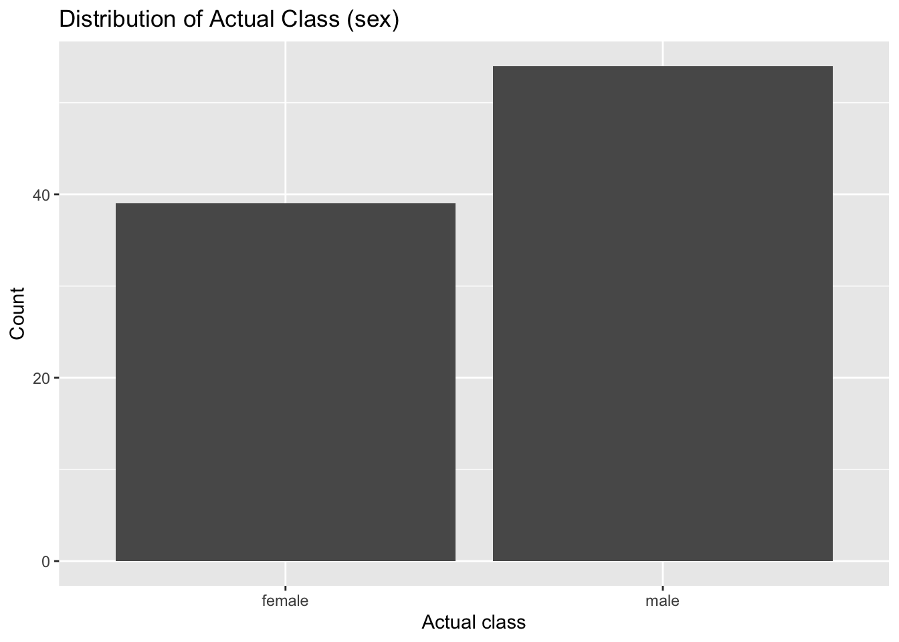

For this assignment, I will use the provided penguin_predictions.csv dataset, which includes the model’s predicted probability of “female” (.pred_female), an existing predicted class label (.pred_class), and the true label (sex). I’ll start by answering the baseline question: compute the null error rate (majority-class error rate) and visualize the class distribution of sex. Then I’ll recompute predicted classes myself at thresholds 0.2, 0.5, and 0.8, build three confusion matrices (TP/FP/TN/FN), and calculate accuracy, precision, recall, and F1 for each threshold in a clear comparison table, finishing with short real-world examples of when a low vs high threshold is preferable.
The main challenges I anticipate are (1) being careful about what counts as the positive class (“female” = 1) and making sure TP/FP/TN/FN are counted consistently across thresholds, and (2) interpreting how metrics change as the threshold shifts (lower threshold → more predicted positives; higher threshold → fewer). I’ll mitigate these by explicitly defining the conditions for TP/FP/TN/FN, double-checking totals add up to the dataset size, and validating that changing the threshold changes predictions in the expected direction before I report the final confusion matrices and metric table.
Introduction
This report evaluates a binary classification model that predicts penguin sex using the predicted probability of the “female” class (.pred_female). The goal is to understand baseline performance (null error rate) and to build intuition for how changing the probability threshold (0.2 vs 0.5 vs 0.8) changes confusion matrices and common evaluation metrics.
Body
Load data
library(tidyverse)
── Attaching core tidyverse packages ──────────────────────── tidyverse 2.0.0 ──
✔ dplyr 1.2.0 ✔ readr 2.1.6
✔ forcats 1.0.1 ✔ stringr 1.6.0
✔ ggplot2 4.0.2 ✔ tibble 3.3.1
✔ lubridate 1.9.4 ✔ tidyr 1.3.2
✔ purrr 1.2.1
── Conflicts ────────────────────────────────────────── tidyverse_conflicts() ──
✖ dplyr::filter() masks stats::filter()
✖ dplyr::lag() masks stats::lag()
ℹ Use the conflicted package (<http://conflicted.r-lib.org/>) to force all conflicts to become errors
# If the CSV is in the same folder as this .qmd, this will work as-is.# Otherwise, update the path (e.g., "data/penguin_predictions.csv").df <-read_csv("penguin_predictions.csv", show_col_types =FALSE)glimpse(df)
ggplot(df, aes(x = sex)) +geom_bar() +labs(title ="Distribution of Actual Class (sex)",x ="Actual class",y ="Count" )

Why the null error rate matters: it tells us what “good” means. If a model’s error rate is not better than the null error rate, then it may not be learning anything useful beyond guessing the majority class.
2. Confusion matrices at multiple thresholds (0.2, 0.5, 0.8)
For this assignment, we treat female as the positive class.
Predict female if .pred_female > threshold
Otherwise predict male
confusion_at_threshold <-function(data, threshold) { data %>%mutate(pred =if_else(.pred_female > threshold, "female", "male"),actual = sex ) %>%summarise(threshold = threshold,TP =sum(pred =="female"& actual =="female"),FP =sum(pred =="female"& actual =="male"),TN =sum(pred =="male"& actual =="male"),FN =sum(pred =="male"& actual =="female"),.groups ="drop" )}cm_02 <-confusion_at_threshold(df, 0.2)cm_05 <-confusion_at_threshold(df, 0.5)cm_08 <-confusion_at_threshold(df, 0.8)cm_02; cm_05; cm_08
When a 0.2 threshold is preferable: when missing a true positive is very costly, and you want high recall (catch as many positives as possible).
When a 0.8 threshold is preferable: when false positives are very costly, and you want high precision (only label positive when very confident).
Conclusions
Overall, the model performs much better than the null baseline: the null error rate provides a minimum standard, while the confusion matrices and metrics show how well the model separates the classes. Changing the threshold demonstrates the core tradeoff: lower thresholds tend to increase predicted positives (higher recall, potentially more false positives), while higher thresholds tend to reduce predicted positives (higher precision, potentially more false negatives).
If this were a real deployment, I would choose the threshold based on the business cost of errors (FP vs FN), validate results with cross-validation or a holdout test set, and add additional metrics/plots such as ROC and PR curves to choose a threshold more systematically.